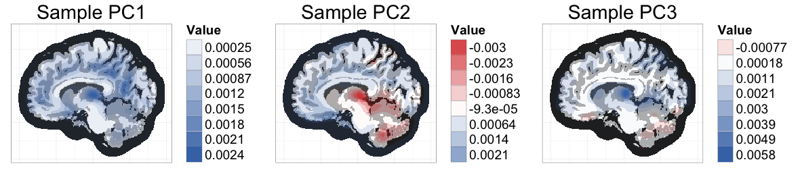
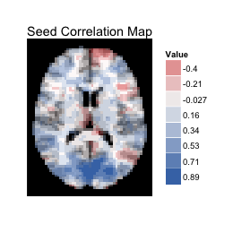
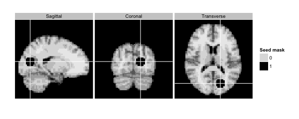

ggBrain - An R package for beautiful brain figures
Check out this lovely brain image figure! I wrote an R package called ggBrain that lets you can generate figures like these with just a couple lines of code!

This figure is from my recent paper on fast, exact methods for bootstrapping high dimensional data (>1 million measurements per subject). When I was working on figures for the paper, I knew that I wanted to use ggplot, but I ended up being surprised by how much tweaking and planning was needed. To help automate the process, I wrote up an R package called ggBrain, which transforms brain image arrays into ggplot objects.
The main step ggBrain handles is the reshaping of 3-dimensional or 4-dimensional brain image arrays into 2-dimensional, "long" data frames -- the data format required for ggplot. The generated data frames only contain information about the slices to be shown in the final figure. Index variables are included to allow the final figures to contain multiple panels (faceted figures). Panels can contain images from different slices, different time points (in fMRI), or different subjects.
The package can also automate several aesthetic options, including:
- Tri-planar figures: For a given voxel, a tri-planar figure shows the sagittal, coronal, and transverse slices that intersect that voxel. These three slices are shown in three panels, and cross-hairs are generated to show the spacial correspondence between the slices (see example below).
- Separete fill scales for template brain images and for overlaying voxel-wise statistics: ggplot2 generally discourages the use of color to display different types of data, on different scales. This makes it hard to use color to show both a brain image template, and to show the value, or sign, of a voxel-wise statistic overlaid on top of that template (see below for an example with seed correlation). The template tissue intensities and the test statistic values are on different scales, which goes against ggplot's method of mapping only one scale to color. In this package, I chose to do the quick fix of hardcoding the coloring of the template image, so that only the voxelwise statistic is formally mapped through ggplot.
- ggplot themes for changing the background to be black, and for removing irrelevant plot labels.
Examples
The vignette for ggBrain (see help(package=ggBrain)) contains several code examples with explanation, so I'll just give some very general examples here. They should give you a sense for the small amount of code required for each figure. In these code chunks, dd is a standard ggplot object. Aesthetic changes are added to dd using the usual ggplot syntax.
# Seed correlation map (stored in the array s_map1)
# mar=3 selects the Transverse plane, and mar_ind=30 selects the slice index.
dd<-ggBrain(template=template,brains=s_map1,mask=mask,mar=3,
mar_ind=30,type='signed')
dd + labs(title='Seed Correlation Map') +
theme_black_bg()

Above, the sign of the correlation is mapped to fill (with a binary scale), and the absolute value of the correlation is mapped to alpha blending (transparency). By default, ggBrain bins the data in order to combine the legends for alpha blending and for fill.
It's also possible to fix a constant level of alpha blending across the image, and to map the raw value of the correlation to a diverging color scale. However, I'm not a fan of the white patches in low correlation regions that result from this approach, and tend to prefer the mapping setup used above.
The image below is an example of a tri-planar figure. Again, for a given voxel, a tri-planar figure shows the sagittal, coronal, and tranvserse slices that intersect that voxel. This tri-planar figure shows the seed region used to calculate the seed correlation map above.
column_ind = factor(c(1,2,3),labels=c('Sagittal','Coronal','Transverse'))
dd<-ggBrain(brains=seed_mask,template=template,mar=c(1,2,3),
mar_ind=c(37,18,30),row_ind=c(1,1,1), col_ind=column_ind,
type='binary',binary_color='black',tri_planar=TRUE,mask=mask)
dd + labs(alpha='Seed mask') + theme_black_bg()

If you're interested, please check out the package!